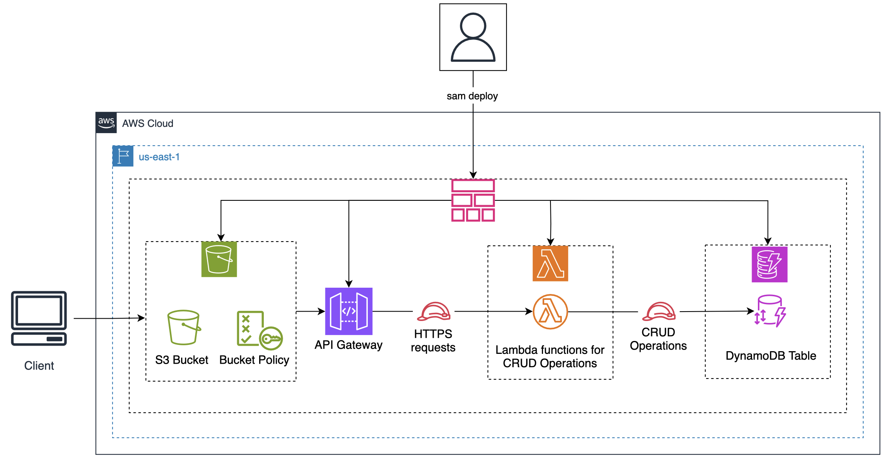

AWS Serverless Application Model (SAM)
Basics of SAM
SAM is all about automation and in theory no need to go to AWS console. SAM uses a CLI and simplified templates which are extension of CloudFormation templates (basically a yaml file). It supports Lambda, API Gateway, DynamoDB, and S3, and event like StepFunctions, SNS, SQS, etc.
We’ll create a Hello World example. First install it: pip install aws-sam-cli. We run sam init and chose hello-world options.
The template is in template.yaml and the only required fields are transform and resources.
We then build and deploy the application.
cd sam-app && sam build # default name is sam-app
sam deploy --stack-name clab-stack --s3-bucket <TEMPLATE-BUCKET-NAME> --capabilities CAPABILITY_IAM # s3-bucket is optional, capabilities are for CloudFormation to create IAM roleThis will build CloudFormation stack, API Gateway, Lambda, and IAM role, and create some files in S3 bucket. Lambda is a Node.js function triggered by API Gateway.
Full stack web application
Now we build a full stack web app, we’ll have template that will create a DynamoDB table, then Lambdas which will be APIs called by API Gateway.
DynamoDB table
We use AWS::Serverless::SimpleTable resource to create DynamoDB table.
template.yaml file
AWSTemplateFormatVersion: '2010-09-09'
Transform: AWS::Serverless-2016-10-31
Description: >
Infrastructure for CLAB "Building and Deploying Serverless Applications using SAM"
Resources:
CourseTable:
Type: AWS::Serverless::SimpleTable
Properties:
TableName: Courses
PrimaryKey:
Name: ID
Type: Number
Outputs:
DynamoDBTableName:
Description: "DynamoDB Table Name"
Value: !Ref CourseTablelet’s add a few items:
aws dynamodb batch-write-item --request-items '{
"Courses": [
{"PutRequest": {"Item": {"ID": {"N": "1"}, "CourseName": {"S": "The Detailed Workings of AWS S3"}, "CourseURL": {"S": "https://www.educative.io/courses/detailed-workings-aws-s3"}, "ImageURL": {"S": "https://www.educative.io/cdn-cgi/image/format=auto,width=950,quality=75/v2api/collection/10370001/6071752037236736/image/6458556865314816"}}}},
{"PutRequest": {"Item": {"ID": {"N": "2"}, "CourseName": {"S": "The Good Parts of AWS: Cutting Through the Clutter"}, "CourseURL": {"S": "https://www.educative.io/courses/good-parts-of-aws"}, "ImageURL": {"S": "https://www.educative.io/cdn-cgi/image/format=auto,width=950,quality=75/v2api/collection/10370001/5943367834796032/image/4534786195456000"}}}},
{"PutRequest": {"Item": {"ID": {"N": "3"}, "CourseName": {"S": "Create an EKS Cluster and Deploy an Application"}, "CourseURL": {"S": "https://www.educative.io/cloudlabs/create-an-eks-cluster-and-deploy-an-application"}, "ImageURL": {"S": "https://www.educative.io/cdn-cgi/image/format=auto,width=750,quality=75/v2api/collection/10370001/5268241073831936/image/6466459398832128"}}}},
{"PutRequest": {"Item": {"ID": {"N": "4"}, "CourseName": {"S": "Educative Bot with Lambda Function Fulfillment using AWS LEX"}, "CourseURL": {"S": "https://www.educative.io/cloudlabs/educative-bot-with-lambda-function-fulfillment-using-aws-lex"}, "ImageURL": {"S": "https://www.educative.io/cdn-cgi/image/format=auto,width=750,quality=75/v2api/collection/10370001/6744845660717056/image/6171933378609152"}}}}
]
}'Lambda functions
We use AWS::Serverless::Function resource to create Lambda function.
Template.yaml
AWSTemplateFormatVersion: '2010-09-09'
Transform: AWS::Serverless-2016-10-31
Description: >
Lambda functions for CRUD operations
Globals:
Function:
Timeout: 3
Tracing: Active
Runtime: nodejs18.x
Resources:
CourseTable:
Type: AWS::Serverless::SimpleTable
Properties:
TableName: Courses
PrimaryKey:
Name: ID
Type: Number
GetCourses:
Type: AWS::Serverless::Function
Properties:
CodeUri: functions/
Handler: readCourses.readCourses
Environment:
Variables:
COURSE_TABLE: !Ref CourseTable
Role:
!Sub arn:aws:iam::${AWS::AccountId}:role/ClabLambdaRole
InsertCourse:
Type: AWS::Serverless::Function
Properties:
CodeUri: functions/
Handler: createCourses.createCourses
Environment:
Variables:
COURSE_TABLE: !Ref CourseTable
Role:
!Sub arn:aws:iam::${AWS::AccountId}:role/ClabLambdaRole
UpdateCourse:
Type: AWS::Serverless::Function
Properties:
CodeUri: functions/
Handler: updateCourses.updateCourses
Environment:
Variables:
COURSE_TABLE: !Ref CourseTable
Role:
!Sub arn:aws:iam::${AWS::AccountId}:role/ClabLambdaRole
DeleteCourse:
Type: AWS::Serverless::Function
Properties:
CodeUri: functions/
Handler: deleteCourses.deleteCourses
Environment:
Variables:
COURSE_TABLE: !Ref CourseTable
Role:
!Sub arn:aws:iam::${AWS::AccountId}:role/ClabLambdaRole
Outputs:
DynamoDBTableName:
Description: "DynamoDB Table Name"
Value: !Ref CourseTable
GetCourses:
Description: "GetCourses Lambda Function ARN"
Value: !GetAtt GetCourses.Arn
InsertCourse:
Description: "InsertCourse Lambda Function ARN"
Value: !GetAtt InsertCourse.Arn
UpdateCourse:
Description: "UpdateCourse Lambda Function ARN"
Value: !GetAtt UpdateCourse.Arn
DeleteCourse:
Description: "DeleteCourse Lambda Function ARN"
Value: !GetAtt DeleteCourse.ArnA ClabLambdaRole role (already created) is used for all Lambda functions. It has the following policy:
"Version": "2012-10-17",
"Statement": [
{
"Action": [
"dynamodb:Scan",
"dynamodb:Query",
"dynamodb:GetItem",
"dynamodb:PutItem",
"dynamodb:UpdateItem",
"dynamodb:DeleteItem"
],
"Effect": "Allow",
"Resource": [
"arn:aws:dynamodb:us-east-1:*:table/Courses"
]
}
]APIs (via OpenAPI)
We use AWS::Serverless::Api resource to create REST API. An OpenAPI document defines the configurations of the API.
api.yaml
swagger: "2.0"
info:
version: "1.0"
title: "Courses"
basePath: "Dev/"
schemes:
- "https"
paths:
/course:
get:
responses: {}
x-amazon-apigateway-integration:
credentials:
Fn::Sub: arn:aws:iam::${AWS::AccountId}:role/ClabAPIRole
type: "aws_proxy"
httpMethod: "POST"
uri:
Fn::Sub: arn:aws:apigateway:${AWS::Region}:lambda:path/2015-03-31/functions/${GetCourses.Arn}/invocations
passthroughBehavior: "when_no_match"
post:
consumes:
- "application/json"
produces:
- "application/json"
responses: {}
x-amazon-apigateway-integration:
type: "aws_proxy"
credentials:
Fn::Sub: arn:aws:iam::${AWS::AccountId}:role/ClabAPIRole
httpMethod: "POST"
uri:
Fn::Sub: arn:aws:apigateway:${AWS::Region}:lambda:path/2015-03-31/functions/${InsertCourse.Arn}/invocations
responses:
default:
statusCode: "200"
passthroughBehavior: "when_no_match"
/course/{courseId+}:
put:
produces:
- "application/json"
parameters:
- name: "courseId"
in: "path"
required: true
type: "string"
responses: {}
x-amazon-apigateway-integration:
credentials:
Fn::Sub: arn:aws:iam::${AWS::AccountId}:role/ClabAPIRole
httpMethod: "POST"
uri:
Fn::Sub: arn:aws:apigateway:${AWS::Region}:lambda:path/2015-03-31/functions/${UpdateCourse.Arn}/invocations
responses:
default:
statusCode: "200"
passthroughBehavior: "when_no_match"
type: "aws_proxy"
delete:
responses: {}
x-amazon-apigateway-integration:
credentials:
Fn::Sub: arn:aws:iam::${AWS::AccountId}:role/ClabAPIRole
type: "aws_proxy"
httpMethod: "POST"
uri:
Fn::Sub: arn:aws:apigateway:${AWS::Region}:lambda:path/2015-03-31/functions/${DeleteCourse.Arn}/invocations
passthroughBehavior: "when_no_match"S3 bucket to store static content
SAM doesn’t provide a resource to create an S3 bucket, we’ll have to use CloudFormation but we can do this also in SAM template as it is compatible. So we add this section to the template that creates sam-web-bucket-${AWS::AccountId} bucket:
```yaml S3Bucket: Type: AWS::S3::Bucket Properties: BucketName: !Sub “sam-web-bucket-\({AWS::AccountId}" PublicAccessBlockConfiguration: BlockPublicAcls: false BlockPublicPolicy: false IgnorePublicAcls: false RestrictPublicBuckets: false WebsiteConfiguration: IndexDocument: index.html S3BucketPolicy: Type: AWS::S3::BucketPolicy DeletionPolicy: Retain Properties: Bucket: !Ref S3Bucket PolicyDocument: Version: '2012-10-17' Statement: - Sid: PublicReadGetObject Effect: Allow Principal: "*" Action: 's3:GetObject' Resource: !Sub "arn:aws:s3:::\){S3Bucket}/*”
